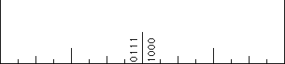

| Locating numbers |
| Place values |
| Comparing numbers Change the 5th digit, how far does it move? |
| Non-unique addresses The right endpoint of the
left half is the same as the left endpoint of the right half.
Here
is an illustration of the addresses of smaller and smaller regions of the right side of the left half
and of the left side of the right half. We see the address of the right endpoint of the
left half is 011111..., and the address of the left endpoint of the right half is 100000... . That is,
0/2 + 1/4 + 1/8 + 1/16 + 1/32 + ... = 1/2. |
 |
|
| Addresses and functions What is the effect on addresses of f0 and f1? |
| What are the fixed points of f0 and f1, both in terms of addresses and algebraically? |
| What are the fixed points of f0(f1) and of f1(f0),
both in terms of addresses and algebraically? |
|
| Fractions and addresses For simplicity we'll use the inch ruler. |
| Suppose the address of x terminates in an infinite string of 0s or in an infinite string of 1s.
What can we say about x? |
| Suppose the address of x consists of a block a1a2...an of
0s and 1s that repeats forever. What can we say about x? |
| Suppose the address of x eventually consists of a block a1a2...an of
0s and 1s that repeats forever. What can we say about x? |
| Suppose the address of x does not terminate in a repeating block. What can we say about x? |
| Can this be used to illustrate that the irrational numbers are a larger infinite set than the rational numbers? |
|
| Addresses of points on the Koch curve A similar addressing scheme can be applied
to the Koch curve. With this we show no point of the Koch
curve has a well-defined tangent. |